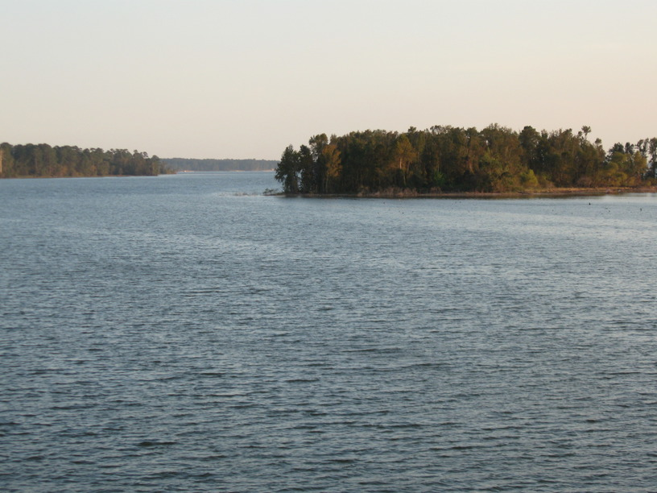
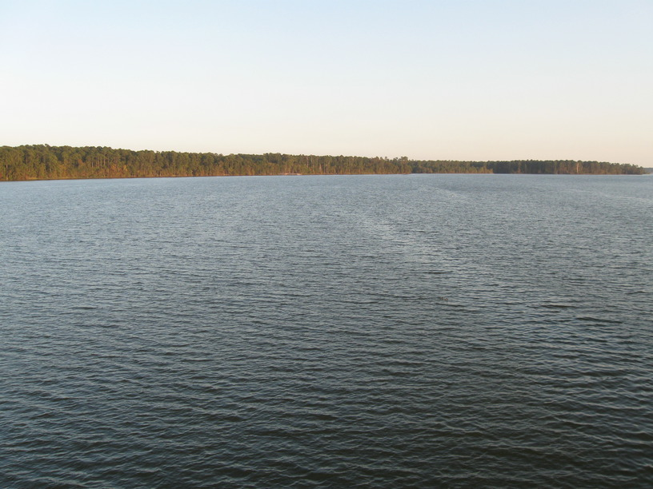
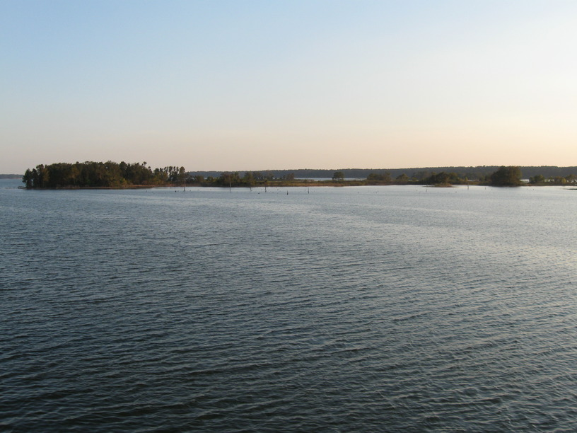

30 Oct 2008, Sam Houston National Forest, TX
Not much to write. I had Mexican at lunch in Shepherd. It was very authentic, and they gave me lots of chips & salsa, which I ate. I stopped by the library after lunch. Between taking a lazy lunch, the clock on the computer being an hour off, & miscalculating how far I had left, I ended up giving myself a very rushed afternoon. I made it here before dark, though. (Here = Sam Houston National Forest.)
Guess that's it.


